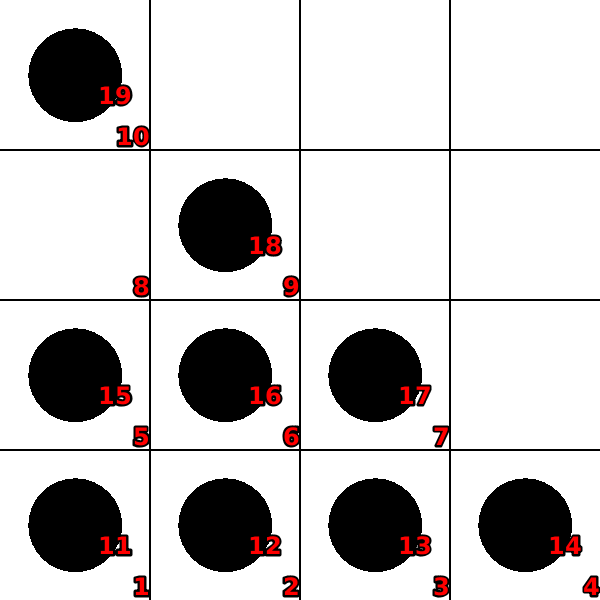
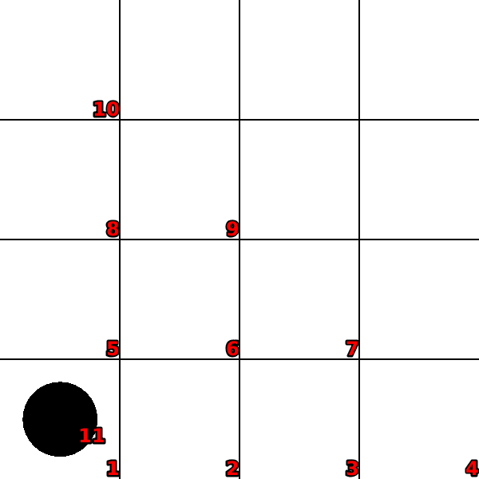

Peg-solitaire2
Language: Teaching Script Entire Dialog
World states:
init-peg.world
final-peg.world
Primitive concepts used
Object types:
|
locations, blocks |
Colors:
|
red, blue
|
| Spatial relations: |
on, below, between |
| Functions: |
count of, less than |
Teaching Dialog (Rosie in bold)
TEACHER: The name of the puzzle is peg-solitaire.
Please setup the puzzle.
TEACHER: Load init-peg.

Ok.
TEACHER: Ok.
Please describe the actions, goals, and failure conditions.
TEACHER: If a peg is between a clear location and a block then you can move the peg onto a garbage plus move the block onto the clear location.
Please describe the meaning of 'clear' in this context.
TEACHER: If a location is not below an object then it is clear.
Ok, I've learned the meaning of 'clear' for this context.
Please describe the meaning of 'peg' in this context.
TEACHER: If an object is a block then it is a peg.
Ok, I've learned the meaning of 'peg' for this context.
I've learned the action.
TEACHER: The solution has eight steps.
Ok.
TEACHER: Load final-peg.

Ok.
TEACHER: The name of the goal is one-covered.
Please setup the goal state.
TEACHER: Ok.
Please describe the goal.
TEACHER: The goal is that the number of covered locations is one.
Please describe the meaning of 'covered' in this context.
TEACHER: If a location is below an object then it is covered.
Ok, I've learned the meaning of 'covered' for this context.
I've learned the goal.
TEACHER: Done.
I've learned peg-solitaire. Should I try to solve the puzzle?
TEACHER: No.
Ok.